Draw the spectrum with knobs. Then let it move on its own.
Tendril is a percussion engine built on additive synthesis. Every hit starts as 64 sine partials, and ten knobs decide how loud each one is and where it sits. Give any knob a MOTION lane and the drawing keeps redrawing itself while the beat plays. Three of these oscillators, a mixer and a sequencer share one plugin.
This rack runs Tendril's own HARMONICS math and its own drawing code in your browser: the ten laws and the 64 partials, the knobs, the chamber and the MOTION lanes, with the pitch sweep and the AMP envelope, at 120 BPM. Here a lane plays one knob; in Tendril it can play up to eight. Everything after the oscillator (NOISE, BODY, DRIVE, FILTER, GLITCH, SHARDS) lives in the plugin.
Additive percussion, drawn with ten knobs
Any sound can be built from sine waves. Each one is a partial: a pure tone at some multiple of the note, at some level. Most synths start from a ready-made wave and filter it. Additive synthesis builds the wave from the partials up, so you shape the tone where it is born.
In Live's Operator you can draw an oscillator's partials by hand: pick the User waveform and click each partial's level in with the mouse. The drawing is yours, and it stays exactly as you left it. Tendril takes that idea to percussion and replaces the pencil with ten knobs. PARTIALS sets how many there are, TILT leans the whole drawing, PARITY keeps the odd or the even ones, STRETCH pulls them off the harmonic series toward a drum skin or a metal bar, and FOCUS raises one region or carves it out.
Because the drawing is made of knobs, every part of it can move. Put a MOTION lane on TILT and the hit darkens and brightens across the bar. Put another on STRETCH and the same hit drifts from wood to metal. Add a third on FORMANT and no two hits in the phrase share a drawing, and you never touched the mouse. Then the drawing runs on through OSC FX, BODY, DRIVE, FILTER, SHARDS and GLITCH, and each of those has knobs that can move too.
Drawn once
A pencil drawing holds still. Every hit plays the same partials until you redraw them by hand.
Drawn by knobs, moving
Three lanes on TILT, PARITY and FOCUS redraw it all the time. Each hit takes the drawing as it stands at that moment.
Three oscillators, one instrument
OSC 1, OSC 2 and OSC 3 are three complete voices, each on its own tab: its own drawing, OSC FX, envelopes, BODY, DRIVE, FILTER, ARP, GLITCH, SHARDS and 8 MOTION lanes, twelve voices deep, with its own sound presets and its own undo history.
The MIXER gives each OSC a fader, a pan, MUTE, SOLO and a KEYS zone (the notes it answers). The MASTER and the output CEILING sit at the end. The SEQUENCER plays a row of steps into each OSC, eight patterns deep, and hands you the beat as a MIDI clip.
Out of the box OSC 1 answers notes up to B1 (kicks on C1), OSC 2 answers C2 to B2 (snares and claps) and OSC 3 answers C3 and up (hats and bells), so one MIDI track plays the whole kit.
One OSC tab, plate by plate
OSC 1, OSC 2 and OSC 3 wear the same face. This is OSC 2 holding the factory sound Bell Forge, with three MOTION lanes mapped onto its HARMONICS knobs. Tap a number to find its plate.
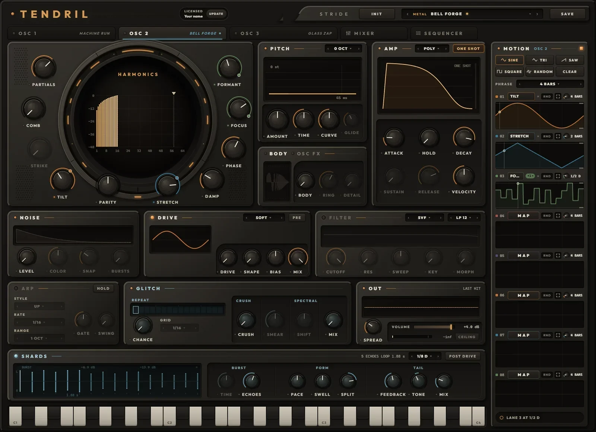
- 1TENDRILThe name and the license badge: LICENSED with your name, or the time left on a Discovery Pass. UPDATE downloads the newest Tendril for this computer.
- 2INIT, PRESET, SAVEINIT (two clicks) resets this OSC to a sine tom. ‹ › step through the presets, the name opens the browser, SAVE keeps what you hear. On an OSC tab these are SOUNDS; on the MIXER and the SEQUENCER they are KITS.
- 3TABSOSC 1, OSC 2 and OSC 3, each lit while it sounds and showing its sound's name, then MIXER and SEQUENCER.
- 4HARMONICSThe 64 partials in the chamber, and the ten knobs around it that draw them. Chapter
- 5PITCHThe octave, and the sweep each hit starts with. Chapter
- 6AMPPOLY, MONO or LEGATO; ONE SHOT or GATE; the envelope and VELOCITY.
- 7BODY / OSC FXTwo plates on one: the squash, and the two slots that rework the drawing. Click a tab to switch. OSC FX
- 8NOISEA snap of filtered noise on the hit, up to four clap bursts.
- 9DRIVENine shapers, before or after the filter. Chapter
- 10FILTERFive filter models with a sweep that follows the pitch envelope. Off until you touch a knob.
- 11ARPArpeggiates the notes you hold, on the song's grid. Chapter
- 12GLITCHREPEAT, CRUSH and SPECTRAL on this OSC's output. Chapter
- 13OUTSPREAD, the sound's own VOLUME, the last hit, and the meter for everything that leaves Tendril.
- 14SHARDSAn echo burst after the voices, shaped into a pattern.
- 15KEYSC1 to C4. Press near the top of a key for a soft hit, near the bottom for a hard one. On an OSC tab they play that OSC.
- 16MOTIONEight lanes for this OSC: pick a shape, MAP a lane, click knobs, set each lane's RATE. Chapter
- 17STATUS LINETendril says what just happened, and what your next click will do.
Hands on the face
- Knobs. Drag up or down; 150 pixels cover the whole travel. Hold Shift for fine moves, scroll the wheel for small steps, double-click for the default. Click a knob, then the arrow keys move it.
- Dropdowns. ‹ and › step through the choices, a click on the name opens the list, the wheel steps too.
- Lamps switch a section on or off; a section that is off greys out. Pressing a FILTER or SHARDS knob switches that section on by itself.
- Dimmed knobs do nothing right now: SUSTAIN and RELEASE in ONE SHOT, STRIKE while COMB is off, FORMANT while FOCUS sits at noon, GLIDE outside LEGATO, RING and DETAIL while BODY is off, a CHARACTER knob while its AMOUNT is off. Turn up the knob it depends on and it wakes.
- Right-click a knob or dropdown that a MOTION lane drives: UNMAP takes it off the lane.
- Undo with Ctrl+Z (Cmd+Z on a Mac), redo with Ctrl+Y or Ctrl+Shift+Z. Each tab keeps its own 50 steps.
- The window opens at 1030 by 747 and scales up to 2800 by 2030, keeping its shape.
Ten knobs instead of a pencil
The chamber shows the 64 partials as bars, each one a sine. The ten knobs around it set how loud each bar is and, with STRETCH, where its pitch sits. Each card below sweeps its own knob with Tendril's own math, everything else held still.
Partials
How many partials sound, from a pure sine up to all 64. The count grows evenly in octaves (1, 2, 4, 8, 16, 32, 64 at each sixth of the turn) and the top partial fades in, so a sweep never steps. More partials sound brighter at the same loudness.
Tilt
Leans the whole drawing, from minus 12 to plus 12 dB per octave. At noon every partial is equal (FLAT); left darkens, right brightens. Minus 6 dB per octave is a saw's slope. The loudness stays put.
Parity
Left takes the even partials out; all the way left leaves the odd ones only, the hollow square-wave colour. Right takes the odd ones out from the third up, leaving the fundamental and the evens.
Focus
Right raises a resonant PEAK at FORMANT and fades the rest; the peak narrows as it grows. Left cuts a NOTCH there instead, and the notch widens as it deepens. At noon FOCUS is off.
Formant
Where FOCUS works, from the fundamental (H1) up to partial 64. A marker over the bars shows it. Sweep it under a peak and the hit talks like a vowel. It dims while FOCUS sits at noon.
Comb
How deep the strike comb cuts: a regular row of holes in the drawing, the way a string or a bar sounds when it is hit at one point.
Strike
Where it is hit. 1/2, the middle, removes every even partial; toward 1/64, the edge, the holes spread apart until a broad hump is left. It dims while COMB is off.
Stretch
Moves every partial off the harmonic series: partial k sits at k to the power of 1 + s. Left heads for SKIN, a drum membrane (1, 1.59, 2.08 ...), right for BAR, a free metal bar (1, 2.83, 5.20 ...). Fine near noon. Here the lines sit at their real pitches; in the chamber the bars keep their places.
Damp
Gives every partial its own decay, each one faster than the one below it, so the hit darkens as it rings like a drum or a bell. The fundamental keeps the AMP envelope. The readout is how long partial 8 takes to fall 60 dB. Here: the drawing 120 ms into the hit.
Phase
Where each partial starts its cycle. SINE starts them all together, the snappiest attack. SCHROEDER spreads them for the lowest peak, the smoothest attack, with the same spectrum. Here: the waveform, not the bars.
Reading the chamber
- The bars are the drawing after OSC FX, each partial in dB against the loudest, from 0 down to minus 48. A dashed line marks where PARTIALS ends; a triangle marks FORMANT while FOCUS works (cream for a peak, pale teal for a notch).
- While a hit sounds, the drawing dims and live bars ride over it: each partial as the newest voice plays it, with DAMP, the velocity colour and TWINKLE in. Pale teal ticks show what actually comes out at each partial's frequency, measured 15 times a second.
- Hover a bar for its reading: partial number and level, the stretch ratio when it is not harmonic, and its frequency once a note has played.
- With OSC FX SHAPE on, the chamber widens to 256 bars, with a dotted line at partial 64.
- The chamber is for reading. You draw with the knobs.
Loudness, clean highs, the same hit every time
- PARTIALS, TILT and the pitch never change the level: Tendril holds the drawing's energy at that of one sine at about minus 10.5 dBFS. The carving knobs (PARITY, FOCUS, COMB and OSC FX) are only half made up, so a notch still takes something out and a drawing carved down to nothing goes quiet.
- Each partial fades out by itself as its frequency nears the top of the audio band, so a big pitch sweep never folds partials back down as grit.
- Every hit restarts each partial at its PHASE and rewinds DAMP, so the same MIDI gives the same audio, bounce after bounce.
Two slots that rework the drawing
OSC FX lives on the second tab of the BODY plate. SPECTRUM reworks the 64 levels the knobs drew. SHAPE turns them into one cycle, bends that cycle, and reads it back as up to 256 partials. Each slot has a mode, AMOUNT and CHARACTER; at AMOUNT 0 the oscillator comes through exactly dry.
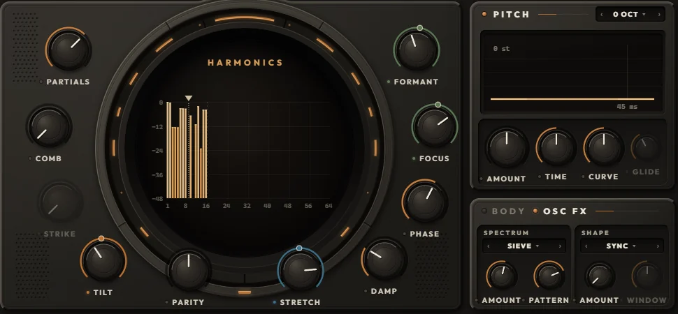
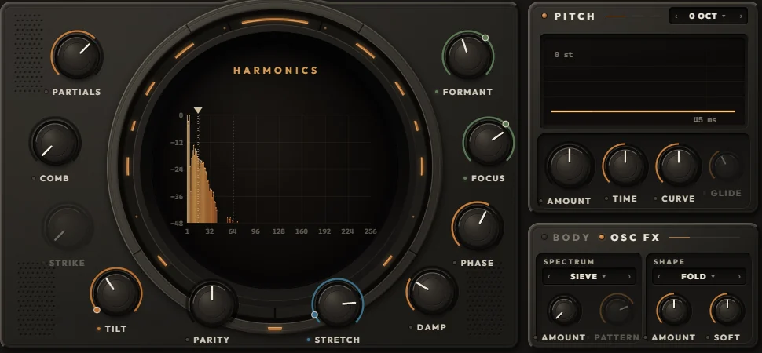
SPECTRUM: on the 64 levels
| Mode | AMOUNT | CHARACTER | What it does |
|---|---|---|---|
| SIEVE | up to 85 % GONE | PATTERN 1 to 8 | Random gaps. Up to 85 % of the partials drop out, fully gone from a third of the way up; the fundamental always stays. CHARACTER morphs through eight fixed patterns. |
| SMEAR | 0 to 100 % | WIDTH 0.25 to 8 partials | Each partial spreads its energy to its neighbours: a blurred, choral drawing. |
| FORMANT | up to 2 OCT | SHIFT down or up | Moves the drawn shape up or down the partials by up to two octaves, odd and even kept apart. |
| LIFT | LIFT or CUT | CURVE | Bends every level against the loudest: LIFT brings quiet partials up, CUT keeps only the loudest. |
| DRIFT | up to 80 CENT | RATE 0.25 to 40 Hz | Every partial except the fundamental wanders off pitch on slow movements of its own. |
| TWINKLE | 0 to 100 % | RATE 0.5 to 20 Hz | Partials ping on their own at random, each at its own rate. The fundamental never twinkles. |
SHAPE: on the cycle the drawing makes
| Mode | AMOUNT | CHARACTER | What it does |
|---|---|---|---|
| SYNC | x1 to x16 | WINDOW: HARD to smooth | Hard sync: the cycle restarts up to 16 times per period. CHARACTER rounds the edge into a smooth formant. |
| BEND | 0 to 100 % | CURVE: SHARP to SMOOTH | Moves the cycle's midpoint toward its start: phase distortion, sharp knee or smooth curve. |
| FOLD | x1 to x12 | SOFT: TRIANGLE to SINE | A wavefolder, triangle folds or sine folds. |
| FEED | 0 to 100 % | EVEN: LINEAR to EVEN | The cycle reads itself ahead by its own value, up to 1.2 turns: self modulation, eased on bright sources. |
| RING | 0 to 100 % | RATIO x1 to x16 | Multiplies the cycle by a cosine at a multiple of the note. AMOUNT mixes it in. |
| STEPS | 128 to 4 STEPS | LEVEL: TIME to LEVEL | Reads the cycle in steps, in time or in level: a stepped, crushed drawing. |
- SIEVE, SYNC, FOLD and STEPS reach full strength a third of the way up AMOUNT; the rest of the travel pushes further.
- SHAPE matches its loudness to the dry drawing, so AMOUNT moves the colour, not the level. It builds up to 256 partials, so even a single sine folds, syncs and rings.
- STRETCH, DAMP, PHASE and the velocity colour act on every partial SHAPE builds.
- Every change glides over 2 ms, so switching modes never clicks. Both modes are MOTION targets: a lane can step a slot from one mode to the next.
- The CHARACTER knob renames itself with the mode (PATTERN, WIDTH, SHIFT, CURVE, RATE; WINDOW, SOFT, EVEN, RATIO, LEVEL) and dims while its AMOUNT is off. The OSC FX tab's lamp lights while either AMOUNT is up.
Sketches of each mode on a simple drawing, AMOUNT sweeping. The plugin runs the real thing on your drawing; SIEVE's patterns here are stand-ins for Tendril's eight.
Pitch, amp, noise and body
These four plates turn the drawing into a hit: where its pitch starts and lands, how it rises and dies, the noise that snaps on top, and the resonant squash that thickens its low end.
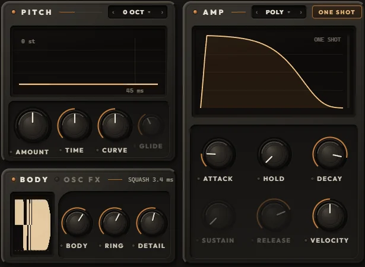
PITCH
Octave −3 to +3 OCT
The dropdown in PITCH's title bar moves the whole oscillator in exact octaves. A hit keeps the octave it started with; the FILTER's KEY and BODY follow it.
Amount −48 to +48 st
How far above (or below) the note each hit starts, in semitones, fine near zero. A fresh OSC starts at +24.2 st.
Time 1 ms to 2 s
How long the sweep takes to land exactly on the note.
Curve LINEAR to p 16
The sweep's shape. LINEAR is a straight line in semitones; higher values drop fast, then settle onto the note with no leftover detune.
Glide JUMP to 2 s
LEGATO only: an overlapping note slides to its pitch, 95 % of the way in GLIDE. Letting go slides back to the key still held.
The same sweep drives the FILTER's SWEEP. VELOCITY scales it: a soft hit bends less. Pitch bend reaches every voice, two semitones each way.
AMP
Voice mode POLY · MONO · LEGATO
POLY gives every note its own voice (twelve per OSC); a repeated note chokes itself, drum-machine style. MONO is one voice and every note hits again. LEGATO is one voice where an overlapping note slides instead of hitting.
One shot / gate
ONE SHOT (lit) plays every hit's whole decay, whatever the note length. GATE is a normal ADSR that follows the note.
Attack 0.2 ms to 2 s
A straight rise to full level.
Hold OFF to 200 ms
Full level after the attack, before the decay: the punch.
Decay 2 ms to 10 s
Time to fall 60 dB: to silence in ONE SHOT, to SUSTAIN in GATE.
Sustain, release
GATE only. The level held while the note is down, and the fall after it lets go (2 ms to 10 s).
Velocity OFF to 100 %
Three things at once: soft hits play quieter (at 50 % the level follows velocity in a straight line), darker (up to 4 dB per octave) and with a smaller pitch sweep. OFF ignores velocity.
Every voice restarts cleanly on each hit with no click, and every hit starts the same way, so the same MIDI gives the same audio.
NOISE
Level NOISE
White noise added to the oscillator before the AMP envelope, so it rides the hit's shape and velocity.
Color LP · WHITE · HP
Left of noon a low-pass from 20 kHz down to 150 Hz; right of noon a high-pass from 20 Hz up to 12 kHz. The plate's title shows the cutoff.
Snap 1 ms to 3 s
The noise's own decay, on top of the AMP envelope.
Bursts 1 to 4
The classic clap: up to four bursts 11 ms apart, each early one dying inside its gap, the last one taking SNAP's tail.
BODY
Body OFF to 100 %
Six resonators on the note's own harmonics lift its low end into a clip that sits near the hit's own peak: the squash. The low end folds into a dense, held square; the hit's decay pushes up against the ceiling. At 0 the stage is out of the path.
Ring SQUASH to 3 s
Up to 75 % the tight squash, a few milliseconds of resonance. Above it the body rings on after the hit, up to three seconds, upper modes dying first.
Detail OFF to 100 %
Keeps the oscillator's own top through the squash. At 0 the clip flattens the top as well; at 100 % everything above the body's resonators comes through untouched, so you get the weight without losing the click.
BODY's small screen fires one test hit through the body on a log time scale, the dry hit faint behind it and the clip's ceiling dashed. The plate's title reads RING's setting while BODY is on. BODY follows the pitch as it sweeps and glides.
Nine shapers and five filters, per voice
Both run inside every voice, oversampled so the grit stays clean. The PRE chip in DRIVE's title sets their order: PRE drives into the filter, POST lets the filter (and its resonance) feed the drive.
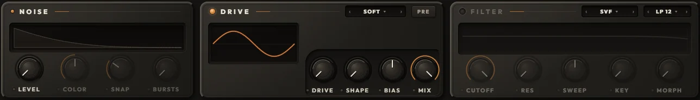
Drive
A lamp switches it, MODEL picks the shaper, then four knobs: DRIVE (input gain, over each model's own range), SHAPE (renamed per model), BIAS (reshapes the harmonics, mostly adding even ones, with no DC) and MIX (dry and wet). Each model is loudness matched, so DRIVE changes the colour more than the level. The screen draws one cycle of the last note through the shaper.
| Model | Drive | Shape knob | Sound |
|---|---|---|---|
| SOFT | −6 to +36 dB | SHAPE: ROUND, TANH, FIRM | Smooth saturation, from round to firm. |
| ASYM | −6 to +36 dB | SKEW | Two slopes and a built-in bias: even harmonics, tube-like warmth. |
| CLIP | −6 to +36 dB | KNEE: SOFT to HARD | From a soft knee to a hard wall. |
| FOLD | 0 to +20 dB | SYMM: EVEN, LOW, HIGH | A triangle wavefolder with movable fold points. |
| SINE FOLD | 0 to +20 dB | EVEN | Sine folding plus an even-harmonic term. |
| HARMONIC | −18 to +14 dB | BLEND: ODD to EVEN | Picks added harmonics, odd through even. |
| RECTIFY | −10 to +30 dB | WAVE: HALF to FULL | One-sided folding, half wave to full wave: octave-up buzz. |
| FUZZ | −6 to +36 dB | FEEDBACK: TIGHT, OPEN, SUSTAIN | Saturation inside a feedback loop. |
| CRUSH | RATE: 48 kHz to 300 Hz | BITS: 16 to 3 | Sample-rate and bit reduction. DRIVE becomes RATE and BIAS becomes JITTER. |
Switching models crossfades, so you can step through them mid-beat, or give MODEL a MOTION lane. With SHARDS set to PRE DRIVE, the drive moves out of the voices onto the OSC's output after the echoes: every echo is driven again and quieter echoes come out cleaner (the PRE chip then dims).
Filter
Off by default; pressing any of its knobs switches it on. MODEL picks the circuit, TYPE the response, and five knobs do the rest.
| Model | Fifth knob | Sound |
|---|---|---|
| SVF | MORPH | Clean. MORPH blends LP into BP into HP into NOTCH and round again. |
| LADDER | BASS | Four saturating stages; self-oscillates at the top of RES. BASS keeps the low end as resonance rises. |
| SCREAM | ASYM | The resonance runs through a saturator: the peak compresses and screams. |
| DIODE | SQUELCH | A diode ladder. At 0 the bass survives; up, it turns thin and squelchy. |
| FORMANT | VOWEL: A E I O U | Three resonators speaking vowels. CUTOFF moves them, RES sharpens them. TYPE does nothing here. |
Type LP 12 · LP 24 · BP · HP · NOTCH
The response for SVF, LADDER, SCREAM and DIODE.
Cutoff 20 Hz to 20 kHz
Where the filter works.
Res 0 to 100 %
Resonance at the cutoff.
Sweep ±6 oct
Moves the cutoff along the pitch envelope's shape and time, even with the pitch AMOUNT at zero. Noon is off.
Key 0 to 100 %
Key tracking around C2: at 100 % the cutoff moves an octave for every octave played. It follows the octave and GLIDE.
The screen draws the real response of the chosen model, a line at CUTOFF, and a brighter line where the cutoff is while a hit plays. A gate on each voice makes a self-oscillating filter or a fuzz loop die with the hit instead of ringing on.
What you hold, where it lands, how loud it leaves
Arp
Each OSC has its own arp in front of its voices. Switch it on with its lamp; HOLD keeps the chord going after you let go, until the next one. It plays one note at a time, each with the velocity you played it at, locked to the song's grid while the song runs (with the song stopped, its own clock starts on your first key). Notes from the SEQUENCER skip the arp.
Style
UP, DOWN, UP DOWN, DOWN UP (no repeated end notes), CONVERGE (outside in), DIVERGE (middle out), RANDOM (never the same note twice in a row), AS PLAYED (the order you pressed).
Rate 1/1 to 1/64, D, T
How long each arp step is. A new rate keeps its place on the grid.
Range 1 to 4 OCT
The pattern repeats this many octaves up.
Gate 5 to 100 %
How much of its step each note holds.
Swing 50 to 75 %
Delays every second step, up to 75 / 25.
Out
Spread CENTRE to 100 %
Each hit lands at a random place in the stereo field, within this width.
Volume −70 to +6 dB
This sound's own level. It is saved with the sound and sits before the MIXER's fader, so browsing sounds never moves your mix. A slider: click a spot, drag, double-click for 0 dB.
Last hit
The last hit's waveform, about a third of a second from its note-on, before SHARDS, GLITCH and VOLUME. The title reads its peak.
Meter and ceiling lamp
Not this OSC alone: everything that leaves Tendril, after the MASTER and the CEILING. Hatching past the bar shows what the ceiling took off the peaks; the lamp reads it (click to clear).
Keys
- The keys run from C1 to C4. Press near the top of a key for a soft hit (30 %), near the bottom for a full one; drag across them to glide over the notes.
- On an OSC tab they play that OSC directly, through its arp. On the MIXER and SEQUENCER tabs they play by the KEYS zones, just like a clip, and each key wears the colour of the OSC that answers it.
- Your computer keyboard plays too: A W S E D F T G Y H U J K O L are C2 up to D3, at a firm velocity. They rest while you type in a field or hold Ctrl or Alt.
- Switching tabs lets go of any held key first.
Eight lanes that keep redrawing the sound
MOTION is how the drawing moves without your hands on it. Each OSC has eight lanes. A lane holds one curve and plays it into up to eight knobs or dropdowns, each inside its own range, at its own RATE: a note value of your song, from 32 bars down to 1/128, or a speed of its own in Hz. That is the difference from drawing partials once: here the drawing is a performance.
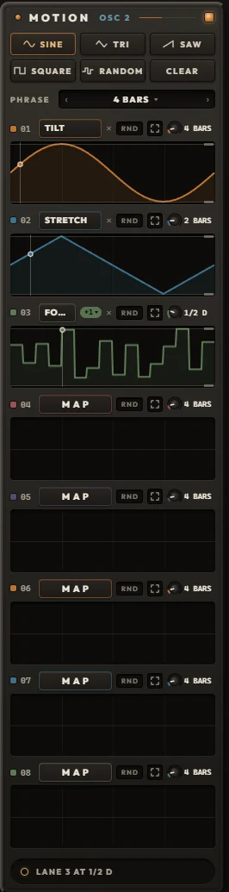
Map a lane in three clicks
- Pick a shape at the top: SINE, TRI, SAW, SQUARE or RANDOM. The last one you picked stays lit.
- Click a lane's MAP. It blinks MAPPING, and every knob and dropdown on the face shows a dashed outline.
- Click the knobs you want on this lane, then click MAPPING again (or press Esc). An empty lane starts playing your shape at once. Click a knob again to take it off.
Or drag a shape button straight onto one knob. That knob alone takes the shape, on a lane of its own (the first free one). Drag CLEAR onto a knob to stop it.
A click on a shape plays it on every mapped lane that is not locked. A click on CLEAR empties those lanes' curves but keeps their knobs.
The shapes
- SINE from the middle, up, down and back.
- TRI the same path in straight lines.
- SAW a ramp from the bottom of the range to the top.
- SQUARE the top for the first half, the bottom for the second.
- RANDOM held levels, one for each beat of the phrase, never too close to the last; each lane rolls its own. With the RATE at the phrase's length (4 BARS on the default phrase) that is a new level every beat.
A lane, left to right
- The number (01 to 08) locks the lane: shape clicks and CLEAR skip it.
- MAP shows the knob it drives. With two or more, a +n badge lists them; pick one to show it on the lane's screen. × takes the shown knob off.
- RND plays every pass in a new random part of the range (20 to 100 % of it), so the same curve never repeats exactly.
- The four corners open the lane editor.
- The RATE knob sets how fast the lane runs. In SYNC one pass of the curve takes a note value of your song: 32, 16, 8, 4, 2 or 1 BAR, then 1/2 D, 1/2 and 1/2 T, and on down through the dotted (D), straight and triplet (T) values to 1/64 T and 1/128. Drag up for faster (Shift for fine), scroll the wheel one value at a time, double-click for 4 BARS.
- The value beside the knob reads the rate. Click it for FREE: the lane leaves the tempo and runs on its own clock, 0.01 to 50 Hz (1 Hz is one pass a second), and the value turns teal. The switch keeps the speed the lane had at the tempo of that moment, so nothing jumps; click again to go back to SYNC on the nearest note value. In FREE the knob glides through the Hz, and a double-click sets 1 Hz.
- The screen is the knob's whole travel. Drag its top or bottom edge to set the range the lane may use, drag between them to move both, Shift for fine, double-click for the full range. It shows one pass of the curve as the knob receives it, a playhead and the value now; faint lines mark the bars a pass spans.
Phrase, clock and power
- PHRASE (1, 2, 4, 8, 16 or 32 bars, default 4) is where the SYNC lanes meet: at the top of every phrase each one starts its curve over, so a dotted or triplet rate lines up with the bar again. A pass longer than the phrase starts over at the top of as many phrases as it needs. PHRASE never sets how fast a lane runs; the RATE does.
- Inside a DAW the SYNC lanes ride the song position: stopped, they hold where the playhead sits; move the playhead and they follow. A FREE lane runs on its own clock, whatever the song does. No lane restarts on a note, so a lane draws its curve across the bars while hits fall through it. The standalone runs the SYNC lanes on its own TEMPO.
- Fast rates keep their shape at any buffer size: a 1/128 or a 50 Hz lane moves the same at 64 samples as at 2048.
- While a lane drives a knob, the knob plays the lane's range and its own position waits. Its arc turns into the lane's band, in the lane's colour, with a dot at the value now.
- The square lamp beside MOTION switches every lane on this tab off and back on; off, every knob plays where you left it.
- A knob lives on one lane at a time; mapping it elsewhere moves it. Right-click a driven knob for UNMAP.
- A Tendril 2 sound's lanes keep their timing here.
Dropdowns move too
Twelve dropdowns are targets: DRIVE MODEL, FILTER MODEL and TYPE, REPEAT GRID, ARP STYLE, RATE and RANGE, SHARDS SYNC, VOICE MODE, the OCTAVE, and both OSC FX modes. A lane sweeping a dropdown gives each choice an equal share, so a SQUARE lane on SHAPE MODE flips a hit between two shapers every half pass, two bars each at 4 BARS. Not targets: VOLUME, the lamps and the chips.
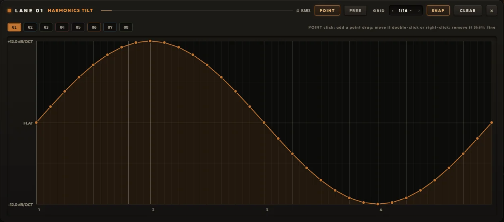
Drawing a lane by hand
- The editor lays one pass of the curve over the phrase's bars and beats; the RATE sets how long that pass really takes. At 4 BARS on a 4-bar phrase the grid is your song's own, at 1 BAR the whole drawing plays inside one bar.
- POINT: click to place a point (time snaps to GRID while SNAP is on; levels never snap), drag a point to move it, double-click or right-click it (or hover and press Delete) to remove it. Shift moves finely without snapping. Up to 160 points.
- FREE: draw with the mouse. With SNAP on you get one level per GRID step: a step sequence for a knob. With SNAP off the line follows your hand.
- GRID 1/4 to 1/64, SNAP, CLEAR (undo brings it back), and tabs 01 to 08 to hop between lanes. Every stroke is one undo step. Esc closes.
Three strips, a master and the ceiling
The MIXER sets how the three OSCs sit together and which notes each one answers. Here it holds the factory kit Forge Kit: a kick on OSC 1, a snare on OSC 2, a hat on OSC 3.
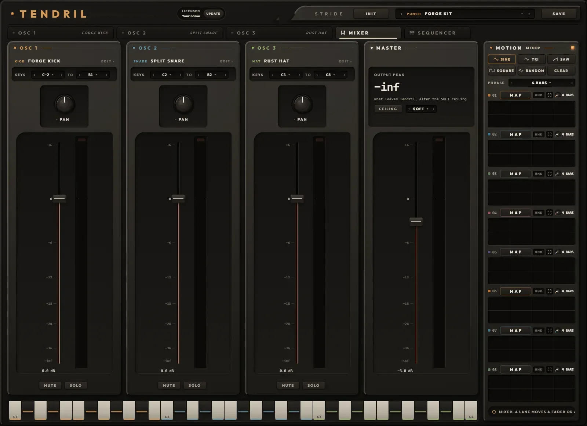
- 1THE STRIPOne per OSC, in its colour, with the sound it holds. Click the sound (or EDIT ›) to open that OSC's tab.
- 2KEYSThe notes this OSC answers from a clip or a keyboard, LO to HI. Zones that overlap layer; LO above HI takes it off the keys and reads NO KEYS.
- 3PANA balance: at noon both sides are full, and turning toward one side turns the other down. Hard left empties the right.
- 4FADERMinus 70 to plus 6 dB, 0 dB at three quarters. Shift for fine, double-click for 0 dB.
- 5STRIP METERThis OSC alone, after its fader, pan and mute, before the MASTER. Its lamp lights at 0 dBFS.
- 6MUTE, SOLOMUTE silences the OSC (it keeps running, so you can shape it in the background). SOLO plays only soloed OSCs. MUTE wins over SOLO.
- 7OUTPUT PEAKWhat leaves Tendril, held and falling slowly, with a line saying what the ceiling is doing.
- 8CEILINGSOFT, CLIP or OFF, and the lamp that reads what it took. Click the lamp to clear it.
- 9MASTERThe last fader before the ceiling. Its meter shows the output, hatched by what the ceiling took off.
- 10KEYS BY ZONEOn this tab the keys play by zone, each wearing the colour of the OSC that answers it.
- 11MIXER MOTIONEight lanes for the faders, the pans and the MASTER, shared with the SEQUENCER's SWING and GATE.
Soft default
Flat up to minus 1.9 dBFS, then a soft knee into 0 dBFS. The ceiling Tendril always had.
Clip
Everything under 0 dBFS passes untouched; anything above stops right there.
Off
Nothing holds the output; it can go over 0 dBFS, so keep an eye on your channel. The lamp turns red and reads how far over it went.
All three run four times oversampled and share one tiny latency (6 samples, reported to your DAW), so switching never shifts your timing; a switch fades over 5 ms. The OUT meter on every OSC tab and the MASTER meter both show the output after the ceiling, and the lamp reads what it took off the peaks, held for a second and a half.
How notes find their OSC
- A clip's notes go by KEYS; the MIDI channel does not matter. A note-off always follows its note-on to the same OSCs, even if you move a zone mid-note.
- The keys on an OSC tab play that OSC directly. The SEQUENCER's rows also play their own OSC directly.
- Default zones: OSC 1 from C-2 to B1, OSC 2 from C2 to B2, OSC 3 from C3 to G8 (Live's note names, where C3 is middle C).
Gain staging
Each OSC's own VOLUME (on its OUT plate) belongs to the sound and is saved with it. The strip's FADER belongs to the mix and comes after it, so browsing sounds never moves your balance. Then PAN, MUTE and SOLO, the three strips summed, the MASTER, the CEILING, out.
Three rows, one for each OSC
The SEQUENCER plays a row of steps into each OSC, all three on one screen, in time with your song. Rows can be different lengths and run against each other, chances roll the same way every bounce, and every pattern can leave as a MIDI clip.
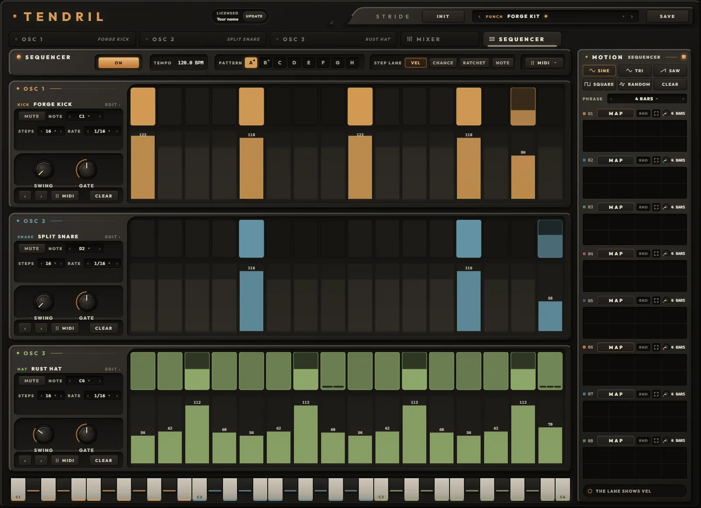
- 1LAMPSwitches the sequencer, the same as ON / OFF.
- 2ON / OFFIn a DAW: ON plays your steps with the song (a dot shows while it does), OFF stops them so only your clips and the keys play Tendril. The standalone shows PLAY here.
- 3TEMPOThe song's tempo in a DAW. In the standalone it is yours: drag up or down, double-click for 120.
- 4PATTERNA to H. Click to play one; Shift+click copies the pattern on screen into that letter. A dot marks the ones that hold something.
- 5STEP LANEWhich value the lanes under the steps show and edit, for all three rows: VEL, CHANCE, RATCHET or NOTE.
- 6MIDIDrag it onto a track for the whole beat as a clip. Click it for LENGTH and EXPORT.
- 7THE ROWOSC 1, 2 or 3 in its colour, with its sound. Click the sound (or EDIT ›) to open that OSC.
- 8MUTE, NOTEMUTE stops the row (the OSC still plays from the keys). NOTE is the row's pitch; the NOTE lane moves steps up or down from it.
- 9STEPS, RATEHow many steps before the row starts again (1 to 64), and how long a step is.
- 10SWING, GATEEvery second step later, up to 75 / 25; and how much of its step a note holds.
- 11‹ › MIDI CLEARRotate every step one place earlier or later; drag the row out as a clip; turn every step of the row off.
- 12STEPSClick a step on or off, drag along the row to paint. Brighter means harder.
- 13THE LANEDrag to draw the shown value across steps, double-click a step to reset it. Off steps keep their values and show them faintly.
- 14MOTIONThe MIXER's eight lanes: here they can move each row's SWING and GATE.
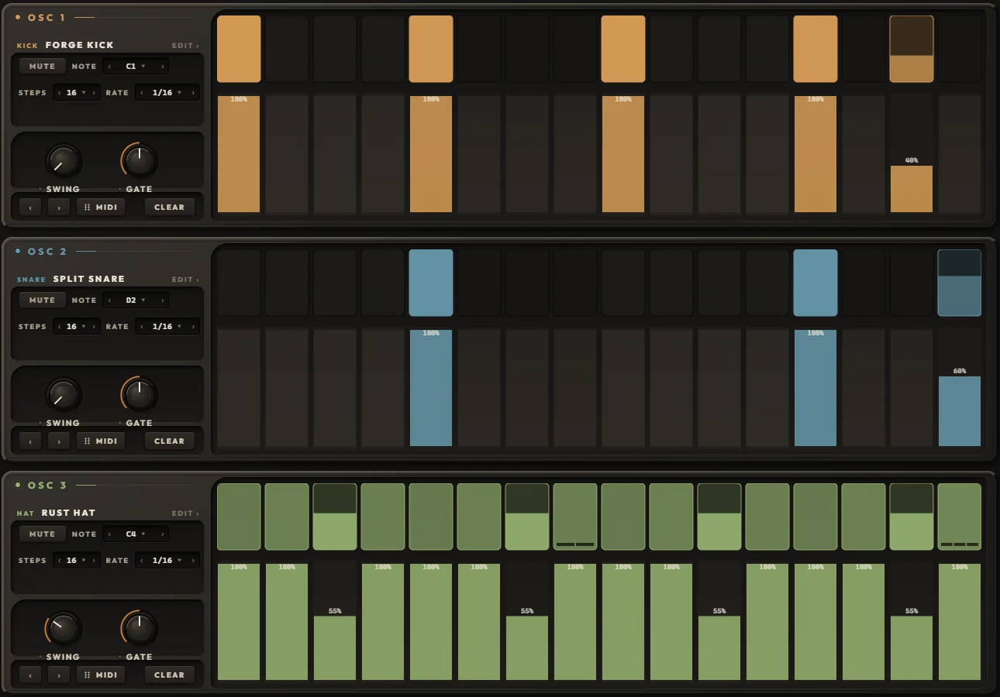
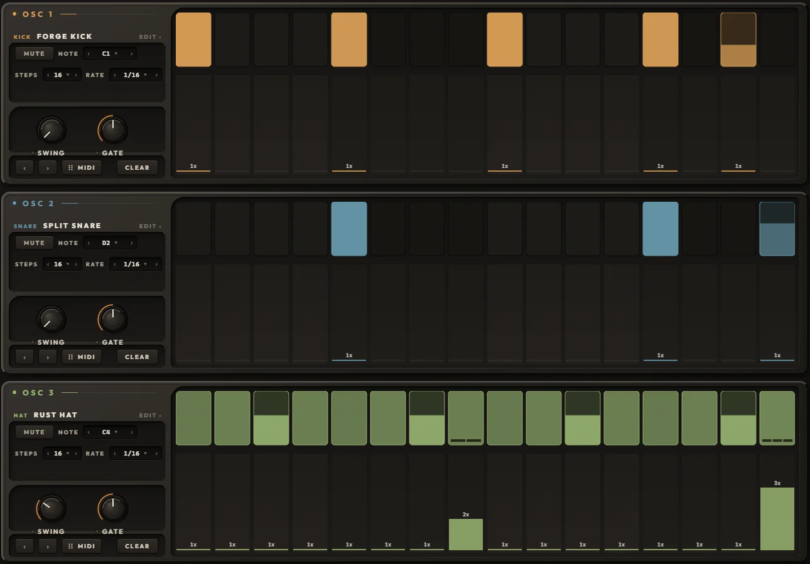
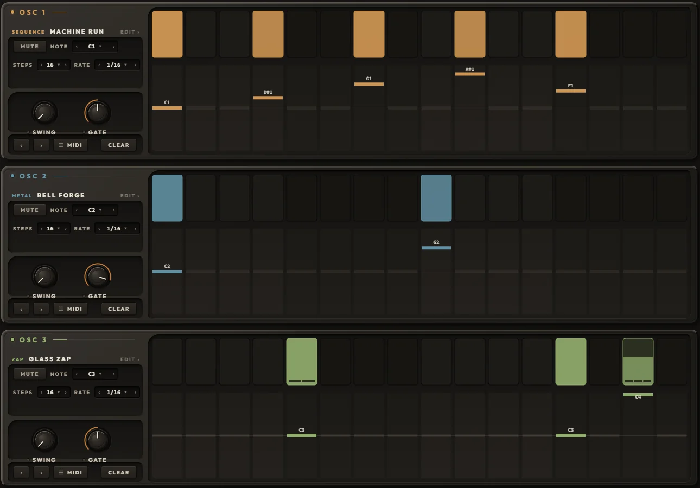
A step and a row
- A step holds five things: on or off, VEL 1 to 127 (100 when new), CHANCE 0 to 100 %, RATCHET 1 to 4 and a NOTE offset. Turn a step off and it keeps its values for when it comes back on.
- Each row has 64 steps; STEPS sets how many play. Steps past that keep their data, silent, until you lengthen the row.
- RATE 1/4, 1/4 T, 1/8, 1/8 T, 1/16, 1/16 T or 1/32. SWING 50 to 75 %, each row its own. GATE 5 to 100 %; a ONE SHOT sound plays its whole decay anyway, so GATE matters on GATE sounds.
- The steps and each row's NOTE belong to the pattern. STEPS, RATE, SWING, GATE and MUTE belong to the row and stay put when you switch patterns.
- SWING and GATE can take MOTION lanes. The row's notes go straight to its OSC and skip its ARP.
Locked to the song
- Every step sits on the song's grid, to the sample, at any buffer size.
- A step's place is its position in the song counted round the row's length. A 16-step row against a 12 and a 7 drifts, and they meet again on the same downbeat after 336 sixteenths. Start mid-song and each row is already where it should be.
- CHANCE rolls come from the row and the song position, so a bounce plays exactly what you heard.
- Loops and jumps end the sounding notes cleanly; a new RATE re-places the row on the new grid. Pattern changes happen at once and keep each row's place.
- In the standalone, PLAY runs the pattern from the top on Tendril's own TEMPO, and SHARDS, REPEAT and every SYNC lane follow that tempo too.
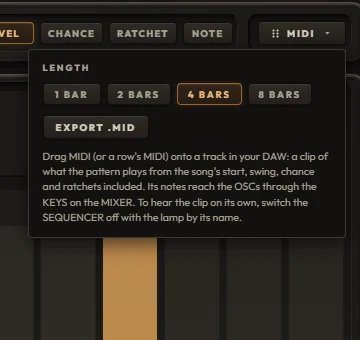
Taking the beat out as MIDI
- Click MIDI and pick a LENGTH: 1, 2, 4 or 8 bars.
- Drag the MIDI button onto a track in your DAW: the whole beat drops as a clip. Drag a row's own MIDI grip for that row alone (a muted row stays out of the beat but comes out on its own grip).
- Or click EXPORT .MID: the beat and each row are saved as files in Documents\Tendril\MIDI (~/Music/Tendril/MIDI on a Mac), never over an older file, and the folder opens on them.
- To hear the clip on its own, switch the SEQUENCER OFF with its lamp, so the steps do not double the clip.
The clip is what the sequencer plays from the song's start, note for note: swing, chance rolls, ratchets and gate included, 960 ticks a beat, with the tempo and 4/4, ending on a whole bar. It is named after the kit (or the sound), the pattern and the length, like Forge Kit A 4 bars. In the DAW the clip's notes reach the OSCs through the MIXER's KEYS; if a row's notes fall outside its OSC's zone, the status line names them and the OSC that will play them instead.
The clip takes SWING and GATE as the knobs sit, not as a MOTION lane moves them, and plays through an OSC's ARP if the ARP is on. The plugin itself sends no live MIDI out: the clip is how the beat leaves.
A sound per OSC, a kit for the whole thing
On an OSC tab the header browses SOUNDS: one OSC's drawing, chain and lanes. On the MIXER and the SEQUENCER it browses KITS: all three OSCs, the mix, every lane and all eight patterns.
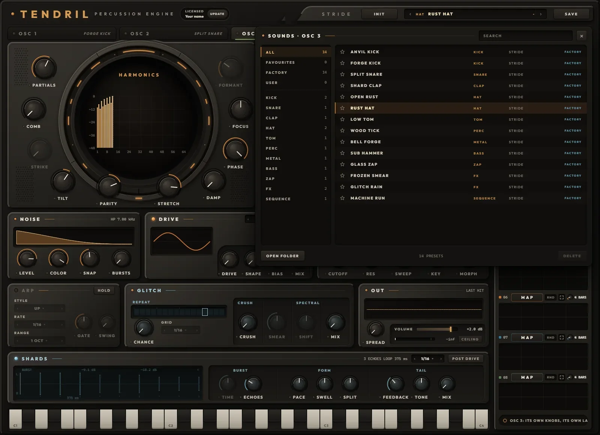
Browsing
- Click the preset name in the header to open the browser. On the left: ALL, FAVOURITES, FACTORY, USER, then the categories with their counts. Sounds: KICK, SNARE, CLAP, HAT, TOM, PERC, METAL, BASS, ZAP, FX, SEQUENCE. Kits: PUNCH, DEEP, METAL, GLITCH, TONAL, FX.
- The star keeps a preset in FAVOURITES. SEARCH matches every word you type against the name, the category and the author.
- ↑ and ↓ load the previous and next preset; Enter closes; Esc clears the search, then closes. The keys stay playable while the browser is open, so you can audition as you go.
- The header's ‹ and › step through the list the browser last showed, even while it is closed, loading as they go.
- OPEN FOLDER opens your preset folder; anything you drop in there (whole folders too) shows up the next time the browser opens. DELETE works on your own presets: two clicks, and it goes to the bin.
- A copper dot on the name (and on the OSC's tab) means what you hear has changed since it loaded.
Saving
SAVE opens a small panel: NAME (up to 64 characters), a CATEGORY chip, AUTHOR (remembered for next time), then SAVE. If the name exists the button turns into REPLACE. Enter saves, Esc cancels, and the preset bar glows when it is done. The file name is the preset's name, so renaming the file renames the preset.
What loads what
- A sound replaces the OSC on screen: its knobs (VOLUME included) and its eight lanes. Its MIXER fader stays where it was.
- A kit replaces everything: three sounds, the mixer, all 32 lanes, all eight patterns and the sequencer settings. One Ctrl+Z brings back the whole instrument from before.
- Every Tendril 2 sound loads into any OSC, and a sound saved here opens in Tendril 2. With its fader at 0 dB, its pan centred and the MASTER at 0 dB, OSC 1 plays a Tendril 2 sound exactly as Tendril 2 does.
- INIT takes two clicks. On an OSC tab it turns that OSC into a sine tom (one partial, a +24 st sweep landing in 45 ms, a 331 ms one-shot decay) with empty lanes. On the MIXER or the SEQUENCER it resets all of Tendril, every lane and every pattern.
The factory kits
Each kit carries a beat in patterns A and B and sets the MASTER to minus 3 dB.
Undo
- Each tab keeps its own history, 50 steps deep: OSC 1, OSC 2, OSC 3, the MIXER and the SEQUENCER. Undo with Ctrl+Z, redo with Ctrl+Y or Ctrl+Shift+Z (Cmd on a Mac). The status line says undo: tendril.
- Undoable: every knob, switch, dropdown and fader move, every MOTION action (mapping, ranges, RATE and its SYNC / FREE switch, lock, RND, shapes, CLEAR, PHRASE, lane-editor strokes), preset loads, INIT and every sequencer edit.
- Not undoable: saving, deleting, favourites, switching tabs, PLAY and MIDI export.
- Inside a DAW the keys belong to Tendril once you have clicked, scrolled or typed in it; otherwise they go to your DAW.
In your DAW, on its own, and on disk
Finding it
Tendril is a VST3 and an AU instrument (AU on a Mac), plus a standalone app. It installs beside Tendril and Tendril 2 and leaves them alone. In Live look under Plug-Ins, in the Patchbay folder; in Logic under AU Instruments, Patchbay. On Windows it needs Microsoft's WebView2 runtime, which the installer offers if it is missing.
License
- Once activated, the header reads LICENSED and your name. UPDATE downloads the newest Tendril for this computer.
- To activate, choose ACTIVATE YOUR LICENSE and paste the key from the email that came with your order. The key keeps working offline; Tendril checks it quietly when you are online, and needs to reach the license server at least once every 14 days.
- A Discovery Pass opens the whole instrument for 24 hours, with the time left shown in the header. When a pass ends your projects stay untouched, and a license picks up right where you left off.
Inside a DAW
- MOTION's SYNC lanes, the ARP, the SEQUENCER, SHARDS' sync and REPEAT all follow your song; a FREE lane keeps its own speed. The SEQUENCER shows ON / OFF; its TEMPO reads the song's.
- Everything saves with your project: every knob, all 32 lanes, each OSC's sound, the kit, all eight patterns and the tab you were on.
- On Windows, Space and Ctrl+S pass through to your DAW, so play, stop and save keep working with Tendril in front.
- The output is 6 samples late (the ceiling's oversampling), and Tendril tells your DAW so it lines up.
Standalone
- The window's Options button holds Audio/MIDI Settings, Save current state, Load a saved state and Reset to default state. Tendril remembers where you left it when you close it.
- It opens every MIDI keyboard and controller it finds by itself, and looks again every two seconds while the window is open.
- With no song to follow, the SEQUENCER's TEMPO (40 to 240 BPM, 120 to start) drives the SYNC lanes, SHARDS and REPEAT, and PLAY runs the pattern.
MIDI and automation
- Notes arrive on any MIDI channel and go to the OSCs by their KEYS zones. Pitch bend moves every voice two semitones each way. The mod wheel, other controllers and aftertouch do nothing, and there is no MIDI learn: to play knobs from hardware, map your controller to Tendril's parameters in your DAW.
- Your DAW sees 267 automatable parameters, named the way the face reads them: OSC 1 Partials, OSC 2 Shards Mix, OSC 3 Fader, Pattern. Knobs show plain 0 to 1 values in a DAW's lanes. The KEYS zones are not automatable, and MOTION lanes are not parameters (each tab's MOTION lamp is).
- Pattern is automatable, so your arrangement can switch A to H.
| What | Windows | macOS |
|---|---|---|
| Sounds | Documents\Tendril\Presets | ~/Music/Tendril/Presets |
| Kits | Documents\Tendril\Kits | ~/Music/Tendril/Kits |
| MIDI exports | Documents\Tendril\MIDI | ~/Music/Tendril/MIDI |
| Favourites | Documents\Tendril\library.json, kits.json | ~/Music/Tendril/library.json, kits.json |
| License | %APPDATA%\Tendril | ~/Library/Application Support/Tendril |
| Standalone settings | %APPDATA%\Tendril | ~/Library/Application Support |
Sounds live in the same folder as Tendril 2's, so both see them, and stars on sounds are shared too. Updating or uninstalling never touches your presets.
Eight ways in
Starting points that use the parts of Tendril a sample can't: the drawing, the lanes, the sequencer's maths. Values are where to start; then move them.
A kick that never lands the same twice
- Load FORGE KICK.
- Drag RANDOM from the MOTION panel onto PITCH AMOUNT.
- On that lane's screen, drag the edges so it stays between about +18 and +30 st. Switch on RND.
- Drag SINE onto DAMP and keep its range low; turn that lane's RATE to 8 BARS.
Every kick drops from a slightly different height and darkens a little differently. Nothing is repeated, and nothing needs a second sample.
Glass hats from the top of the drawing
- INIT the OSC. PARTIALS all the way up, TILT about +6 dB/OCT, STRETCH toward BAR.
- FOCUS to PEAK 70 %, FORMANT near H40.
- PITCH AMOUNT to OFF, AMP DECAY about 60 ms.
- A little NOISE: COLOR high-pass near 8 kHz, SNAP about 30 ms.
- Drag TRI onto FORMANT, range H16 to H64, RATE 2 BARS.
A metal hat whose shine slides up and back every two bars.
A snare with weight and its crack
- Load SPLIT SNARE.
- BODY 40 %, RING left in the SQUASH range, DETAIL 70 %.
- Drag SAW onto NOISE COLOR, from a low-pass near 6 kHz to a high-pass near 3 kHz, RATE 16 BARS.
A thick, squashed body under the original crack, and noise that opens up over sixteen bars.
A clap that flicks across the stereo
- Load SHARD CLAP.
- SHARDS: ECHOES 2, PACE FASTER, SPLIT LEFT 60 %, TONE toward HP.
- MIX about 30 %.
The four-burst clap, then two thin echoes that land left and right.
One tom, two skins
- Load LOW TOM. On the OSC FX tab set SHAPE to FOLD, AMOUNT 40 %.
- Drag SQUARE onto the SHAPE mode dropdown.
- On the lane's screen drag the edges until they read FOLD and RING.
At the lane's default RATE of 4 BARS the tom wears a folded skin for two bars and a ringing one for the next two.
A bouncing-ball fill
- SHARDS SYNC 1/16, ECHOES 6.
- PACE FASTER 60 %, SWELL FADE, FEEDBACK 0.
- MIX 40 %; switch to PRE DRIVE with some DRIVE so later echoes come out cleaner.
Each hit drops like a ball and settles, on the grid.
Polymeter in a minute
- Load FORGE KIT and open the SEQUENCER.
- Set STEPS to 16, 12 and 7.
- STEP LANE CHANCE: pull a few hats to 50 %. STEP LANE RATCHET: give the last hat 3.
- Shift+click B to keep a copy, then keep pushing A.
- When a stretch of it lands, click MIDI, pick 8 BARS and drag it onto a track.
The rows drift and meet again on the downbeat; the clip freezes the drift you liked.
A frozen tail under a bell
- Load BELL FORGE.
- GLITCH SPECTRAL: MIX 40 %, SMEAR all the way to FREEZE.
- Drag SINE onto SHIFT with a narrow range around noon. Click the lane's RATE value for FREE and set about 0.1 Hz.
The bell's spectrum hangs under the next hits and drifts slowly in pitch, on a clock of its own. Pull SMEAR down to let it go.
The key to every control
Every knob, switch and dropdown on every tab, with its range. Type to search, or pick a section.
| Control | Where | Range | What it does |
|---|